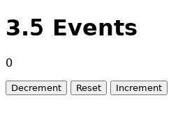

3.5 Events
Exercise Overview
In this exercise you will create a counter app that updates and shows its value
inside a paragraph tag. The counter starts at 0 (zero) and has
minimum value at -5 and maximum value at 5.
The counter will have the following characteristics:
- The counter has three different buttons: Increment, Decrement, and Reset.
- After clicking a button counter value is updated and shown inside a paragraph above the buttons.
- Clicking Reset will always reset the counter back to zero.
- Clicking Increment will increment the counter value by one.
- Clicking Decrement will decrement the counter value by one.
- Decrementing counter at the minimum value will roll the counter over to the maximum.
- Incrementing counter at the maximum value will roll the counter over to the minimum.
Below is an image of the counter:

Implementing the Exercise
Start by making sure you are in your local clone of the Git repository, and in its
exercises/03_html/3.5-events directory where this instructions.html
file is located. Then:
- Write your code into counter.js file inside this directory.
-
You can find the HTML of the counter in the index.html file inside this directory.
Make note of the IDs of the buttons and the paragraph tag in the HTML. You can use them in
your code to get hold of the elements. DO NOT EDIT THIS FILE!
-
The functionality of each button should be accomplished inside event listeners to the click
event of each button. Every event listener should read the current counter value and update it according
the rules above. The paragraph text should always contain the current counter value.
Number.parseInt() can be used to parse the counter value back to integer before performing
any comparisons and calculations with the value.
More information of event listeners and examples can be found here:
JavaScript | addEventListener() with Examples and here:
Learn About JavaScript AddEventListener in a Nutshell
Remember to commit counter.js and push the changes to your Git repository
before you submit your work in Plussa.